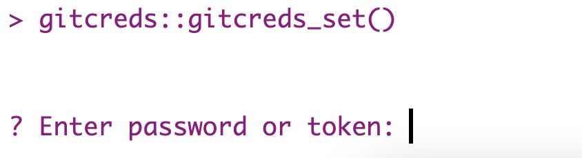
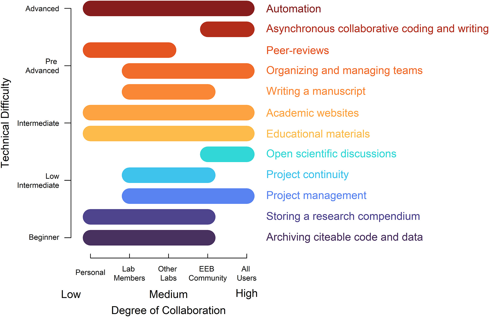

# Run me in RStudio's "Console"
version$version.stringOverview
Welcome!
This workshop provides an overview of what “version control” systems are and how they fit into collaborative coding within your team. Specifically, we are focusing here on an introductory approach to version control that focuses on using Git via RStudio and GitHub. We are always happy to improve workshop content so please don’t hesitate to post an Issue on our GitHub repository if you see clear areas for improvement!

To maximize the value of this workshop to you, we recommend that you take the following steps before the day of the workshop. Depending on whether you’ve used RStudio and/or GitHub before you may have already completed some or all of these steps but please read through the following materials regardless to ensure that all participants arrive with a common foundation of installed programs. If anything is unclear, feel free to reach out to us; our contact information can be found in the “SciComp Team” dropdown menu in the “People” page.
Workshop Preparation
The below preparation includes some code chunks for making sure everything is installed as it should be. All code is either R code () or is command line code (). In both cases, you’ll run all provided code in RStudio. R code should be run in the “Console” tab of RStudio while command line code should be run in the “Terminal” tab of RStudio.
If you get errors with the provided code, double check that you are running it in the right place!
Institution-Owned Computers
If your institution has a dedicated IT team that has sole power to install software on your computer, you will need to contact them before the workshop to do the installation bits of the prep steps we outline below.
1. Install R
Begin by installing R. If you already have R, check that you have at least version 4.0.0 by running the following R code:
If your version starts with a 3 (e.g., the above code returns “R version 3…”), please update R to make sure all packages behave as expected.
2. Install RStudio
Once you have R (ver. ≥4.0), install RStudio. If you already have RStudio installed, you may want to make sure that you’re using a recent version to take advantage of some quality of life improvements that are broadly useful.
3. Install Git
With R and RStudio installed you can now install Git! Git is the software that actually does the behind-the-scenes version control operations we’ll cover in this workshop. Installing Git differs slightly depending on your operating system so check out the tabs below for the right option for you. These instructions are modified from Jennifer Bryan’s excellent “Happy Git and GitHub for the useR” ebook.
In RStudio’s “Terminal” pane, run the following command line code.
# Run me in RStudio's "Terminal"
xcode-select --installFor more detailed instructions, see here.
Install Git for Windows (a.k.a. “Git Bash”). When asked about “Adjusting your PATH environment”, select “Git from the command line and also from 3rd-party software”.
For more detailed instructions, see here.
Install Git via your distro’s package manager (in the Terminal).
If you use Ubuntu or Debian Linux that code is as follows:
sudo apt-get install gitIf instead you use Fedora or RedHat Linux the code is instead:
sudo yum install gitFor more detailed instructions, see here.
4. Check Git’s Installation Worked
Regardless of your operating system, once you’ve installed Git, check that worked with the following command line code. All operating systems should be able to run this in the “Terminal” pane of RStudio.
# Run me in RStudio's "Terminal"
which gitRStudio should be able to detect Git so let’s check from that side too. In RStudio click through the following menus: “Tools” “Global Options” “Git / SVN” (cardboard box icon in left sidebar). If you see a file path under “Git executable” then you are good to go!
Git Not Detected?
If you had your RStudio session open while you installed Git for the first time, RStudio may not have detected Git on your computer. In that case, please close and restart RStudio before checking again.
5. Create a GitHub Account
Now that you’re all done installing programs, it’s time to create an account on GitHub. GitHub is how you’ll be able to collaborate with others. Dr. Bryan has some nice guidelines for picking a good username and we also recommend adding a picture of yourself so that group members can more confidently identify one another on GitHub.
6. Connect Git and GitHub
The last step to take before you’re all set for the workshop is to get these components talking to one another! You set a password for your GitHub which is used for logging in to GitHub but to actually put your code changes from your computer up to GitHub you’ll need to authenticate yourself. There are two paths for authentication:
- Personal Access Token (PAT)
- Secure Shell (SSH)
What’s the difference? Essentially, authenticating via token makes many things “just work” while authenticating via SSH will work for some things but in other contexts you would also need to do token-based authentication. For a more complete discussion of the benefits and drawbacks of each, see Dr. Bryan’s “HTTPS versus SSH” page.
Follow the steps of your chosen authentication method in the tabs below.
All of the code chunks for authenticating with a token are R code that should be run in the “Console” pane of RStudio. You may also create a script and run the code from there if you so desire but you’ll likely only need this code once so the script’s value would be short-lived.
# Install the `usethis` and `gitcreds` packages
install.packages(c("usethis", "gitcreds"))
# Create a token (Note this will open a GitHub browser tab)
## See steps 6-10 in GitHub's PAT tutorial (link below)
usethis::create_github_token()- 1
- Leave parentheses empty
Copy your token at the end of the above step. Once you leave the page where your token is displayed you’ll never get to see it again! So if you close that page without copying it you’ll need to make a new one in order to continue.
Once you’ve copied your token, run the code below to save your credentials in RStudio.
# Now, give your token to RStudio
## After you run this line follow the prompts in the "Console" tab of RStudio
gitcreds::gitcreds_set()- 2
- Leave parentheses empty here as well!
This line of code will prompt you to paste your token in the “Console” tab. After you do so, your token will be safely stored in RStudio!

Further Information
You may also find GitHub’s PAT tutorial (this is the link referenced in the first token-authentication code chunk!) or the Happy Git with R PAT tutorial helpful.
All of the code chunks for authenticating with SSH are command line code that should be run in the “Terminal” pane of RStudio.
First, we need to check whether you already have SSH keys created on your computer. If you get a message saying that nothing exists or the path doesn’t exist, you do not have SSH keys (yet).
ls -al ~/.ssh/If you do need to create an SSH key pair you can do so via the command line. When you create a key pair you’ll need to include a descriptive comment to help ‘future you’ if you ever have multiple key pairs in your life. We recommend “lter” plus your GitHub username to keep things simple.
ssh-keygen -t ed25519 -C "lter-github"
Older Computer?
If you get a warning/error because your system is too old to support the Ed25519 algorithm (that’s the variant recommended by GitHub) you can instead use:
ssh-keygen -t rsa -b 4096 -C "lter-github"Accept the prompt to save the key in the default location by hitting Enter. You will be prompted to enter a passphrase that will be required to access your SSH key later on. This step is technically optional but is considered a best practice. If SSH keys are totally new to you, we recommend skipping the passphrase step.
Once you’ve generated the key pair, follow GitHub’s instructions on adding that key pair to your computer’s ssh-agent (roughly equivalent to a password manager but just for SSH key pairs).
Finally, you need to share the public key with your GitHub self. Once again we’ll refer you to the phenomenal materials generated by Dr. Bryan on this topic.
Further Information
You may also find GitHub’s SSH documentation or the Happy Git with R SSH tutorial helpful.
7. Celebrate!
After following all the previous preparation steps, your setup should now be complete.
GitHub + Science Publications
The reproducibility and collaborative benefits of GitHub for working scientists is well appreciated and increasingly well published upon. See below for brief synopses of papers published in this realm that we think may resonate with your team’s disciplinary backgrounds and motivations.
In the ecology and evolutionary biology sphere, Pereira Braga et al. published “Not just for programmers: How GitHub can accelerate collaborative and reproducible research in ecology and evolution” in Methods in Ecology & Evolution. This paper is a phenomenal resource for ecologists and evolutionary biologists who are considering the value of GitHub to them in and outside of a working group context. The authors identify 12 uses of GitHub for the EEB community and arrange them by technical difficulty (ranging from beginner to advanced) and degree of collaboration (low to high). We have embedded this paper’s second figure in this website below as it is a neat summarization of many of their central points. That said, we definitely recommend reading (and citing!) Pereira Braga et al. 2023 for more detail than we’ve included in this blurb.
If you are concerned about the technical side of GitHub for yourself and/or your lab group, we recommend focusing on the lower technical difficulty benefits of GitHub (see the blue bars). We also think that some of the intermediate technical difficulty uses (orange bars) may be relevant to working group priorities and goals.
